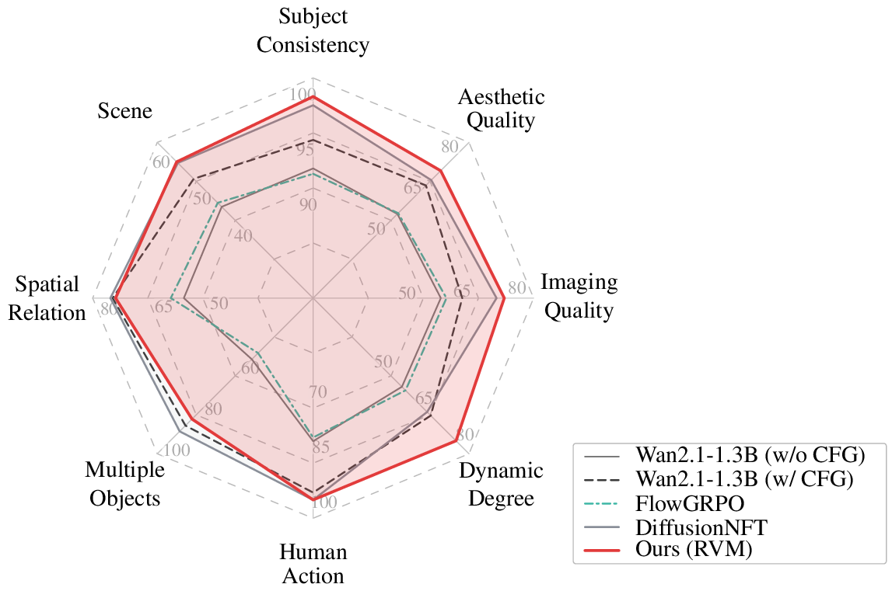

Scaling Reinforcement Learning for Diffusion Models via Velocity Matching
1
2

Loading representative videos...
RVM fine-tunes video diffusion by rewarding the learned velocity field directly, without denoising-trajectory policy gradients.
We study reward fine-tuning for large-scale diffusion and flow models through a velocity-matching perspective. Instead of estimating policy ratios along denoising trajectories, reward-based velocity matching (RVM) applies reward feedback directly to the learned velocity field. The resulting objective combines a reward-weighted regression term with an anchor term that controls model drift. This view connects several recent velocity-based objectives while keeping training simple, trajectory-independent, and practical for video generation.
RVM replaces trajectory-level RL machinery with reward-weighted velocity matching plus a lightweight anchor.
The loss is evaluated from generated samples and noisy states, without storing or scoring full denoising rollouts.
High-reward samples receive stronger velocity-matching signal, nudging the field toward reward-aligned generations.
A detached anchor velocity regularizes the update and recovers related velocity-based objectives under specific choices.
L_RVM(theta) = E[ r(x_0) || v_theta(x_t,t) - v_target ||^2 + beta || v_theta(x_t,t) - v_anchor(x_t,t) ||^2 ]
Here x_t = (1 - t) x_0 + t epsilon with epsilon sampled from a standard Gaussian, and v_target = epsilon - x_0.
RAM shapes a detached reward target. With the frozen reference as anchor and unit anchor strength, its velocity-field update matches RVM.
DiffusionNFT contrasts positive and negative EMA-anchored branches. Its objective is an EMA-anchored RVM up to constants, with signed reward weight 2r_nft - 1.
RVM writes the shared structure directly: reward weighting chooses the preferred sample direction, while the anchor controls model drift.
Representative VBench-T2V metrics from the appendix table.

Text-to-video. 53 frames, 480x832, 16-step DPM-2 ODE, VBench-official suite. The headline is the short VBench suite prompt (what the file is named after); expand "extended prompt" for the self_forcing_extended caption the model was actually conditioned on.
Image-to-video. 53 frames, 400x640, 16-step ODE, cfg=1.0, VBench-I2V (vbench_i2v_a14b). The headline IS the prompt the model was conditioned on -- these runs used the original short prompts. The expandable rewrite comes from a separate eval_a14b_extended run and was NOT used for these clips. No CFG=5 baseline was collected for this model.
If you find our work useful, please consider citing it as follows.
@article{choi2026rvm,
title = {TBA},
author = {TBA},
year = {TBA}
}